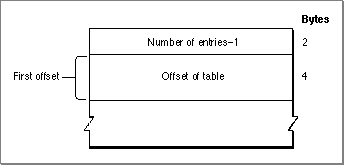

The Offset Table
The offset table is an optional table that is included in the font family resource whenever any of the other optional tables are included. This table, which is shown in Figure 4-25, allows the font designer to add more tables to the font family resource.
The offset table consists of an integer count and a variable number of table offset values, each of which is 4 bytes long. There is no data type defined for this table.